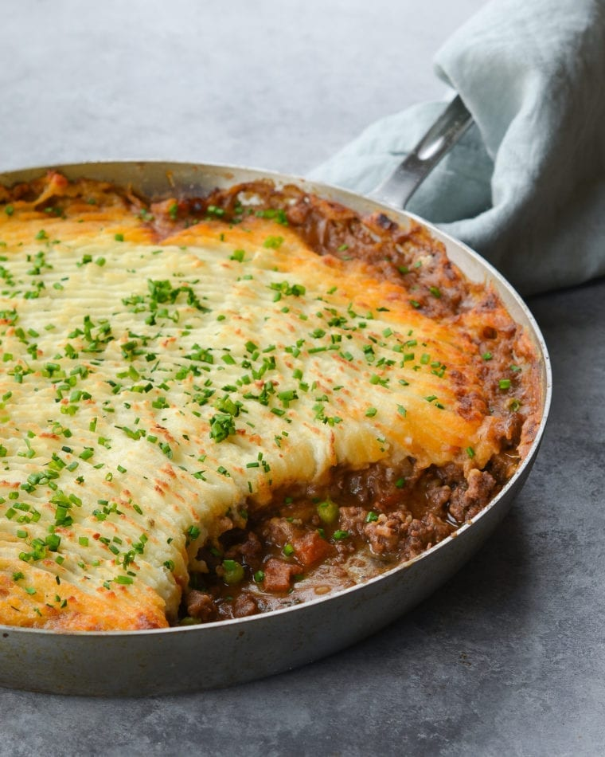

Shepherd's Pie Recipe
Home

Description
Shepherd’s pie is a comforting dish consisting of creamy mashed potatoes
on top of a rich and bubbly stew. It originated in the UK and Ireland and
is traditionally made with lamb, but in the U.S. it is more commonly made
with beef (and referred to as cottage pie). While the original version is
made with leftover lamb stew, modern recipes typically call for ground
meat, which cooks quickly and doesn’t require leftovers.
For this version, you begin by whipping up a batch of buttery, sour
cream-enriched mashed potatoes, and then you make a flavorful ground beef
stew with bacon, vegetables, and wine. You can either spread the mashed
potatoes over the stew right in the skillet (for easy clean-up) or
assemble the layers in a separate casserole dish for baking.
Ingredients
- 1½ pounds 90% lean ground beef
- ½ teaspoon baking soda
- 2 teaspoons salt, divided
- 2½ pounds russet potatoes, peeled and cut into 1-inch chunks
- ¼ cup sour cream
- 5 tablespoons unsalted butter, cut into 1-in chunks
- ¼ cup half & half
- 4 oz bacon, diced (about 3 slices thick-cut bacon)
- 2 medium yellow onions, diced
- 2 carrots, diced
- 3 cloves garlic, minced
- 1 cup red wine
- 2 tablespoons all-purpose flour
- 3 tablespoons tomato paste
- 1 teaspoon Worcestershire sauce
- 1½ cups chicken broth
- 1 tablespoon chopped fresh thyme
- ½ teaspoon freshly ground black pepper
- ½ cup frozen peas
- 2 tablespoons finely chopped chives
Steps
-
Preheat the oven to 375°F and set an oven rack in the middle position.
-
Place the beef, baking soda, 1 teaspoon of the salt, and 1 tablespoon of
water in a medium bowl. Mash with your hand to combine. Set aside for 20
minutes.
-
While the meat tenderizes, place the potatoes in medium saucepan and add
just enough cold water to cover them. Bring to a boil over high heat,
then reduce the heat to medium-low and simmer, uncovered, until the
potatoes are soft and fork-tender, 8 to 10 minutes. Drain the potatoes
and return to the saucepan. Place the pan over medium heat and stir the
potatoes with a wooden spoon or potato masher until they are dry and
fluffy, about 3 minutes. Remove the pan from the heat and add the sour
cream, butter, half & half, and the remaining teaspoon of salt. Using a
potato masher, stir and mash the potatoes with the other ingredients
until smooth. Taste and adjust seasoning, if necessary. Set the mashed
potatoes aside.
-
Heat a 12-in oven-proof skillet over medium heat. Add the bacon and
cook, stirring frequently, until crisp, 6 to 8 minutes. Using a slotted
spoon, transfer the bacon to a paper towel-lined plate, leaving the fat
in the pan. Add the onions and carrots to the bacon fat and cook,
stirring frequently, until softened and starting to brown, 6 to 8
minutes. Add the garlic and cook 1 minute more. Add the wine and
increase the heat to high; bring to a boil, scraping any brown bits from
the bottom of the pan, until the liquid is reduced by about half. Add
the flour and stir until dissolved. Add the reserved ground beef
mixture, tomato paste, and Worcestershire sauce; continue cooking on
high heat, breaking the meat apart with a spoon, until the meat is no
longer pink, about 5 minutes. Add the chicken broth; bring to a simmer,
reduce the heat to low, and cook, scraping any brown bits from the
bottom of the pan, until thickened, about 2 minutes. Stir in the thyme,
pepper, peas, and reserved bacon, and cook until the peas are warmed
through. Taste and adjust seasoning, if necessary.
-
Dollop the mashed potatoes evenly over the filling. Use a rubber or
offset spatula to spread the potatoes evenly over the stew and all the
way to the edges of the skillet. Drag a fork across the top to make
ridges. Place the skillet on a baking sheet or large sheet of foil to
catch any drips and bake until the filling is hot, the topping is
lightly browned, and the edges are bubbly, about 30 minutes. (For more
color, turn on the broiler and broil for the last 5 minutes, or until
the top is golden.) Sprinkle with chives and serve
Go to Top